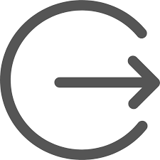

<div style="float: right;margin-right: 15%;display: flex;width:20%;"> 
    <button (click)="goToContactPage()" class="btn btn-primary" style="width: 100%;color: black;background-color: #ffff;border-radius: 25px;margin-right: 2%;">
    Contact Us</button> <button (click)="goToAnalyticsPage()" class="btn btn-primary" style="width: 100%;color: black;background-color: rgb(230, 230, 230);;border-radius: 25px;">
        Analytics</button>
        
    </div>

    <div class="container">
        <h2>Contact US Form</h2>
        <mat-form-field style="margin-right: 10%;">
            <input matInput [matDatepicker]="picker" placeholder="start date" (dateChange)="startDateChange($event)">
            <mat-datepicker-toggle matSuffix [for]="picker"></mat-datepicker-toggle>
            <mat-datepicker #picker ></mat-datepicker>
          </mat-form-field>
          <mat-form-field>
            <input matInput [matDatepicker]="picker2" placeholder="end date" (dateChange)="enddateDateChange($event)">
            <mat-datepicker-toggle matSuffix [for]="picker2"></mat-datepicker-toggle>
            <mat-datepicker #picker2 ></mat-datepicker>
          </mat-form-field>
          <!-- <mat-form-field> -->
            <button style="margin-left:5%;" (click)="getContactSearchData()">search</button>
          <!-- </mat-form-field>
           -->
          <div style="width: 600px;height:600px;" *ngIf="_isChartShow">
            <canvas id="myChart"></canvas>
          </div>
      
      </div>